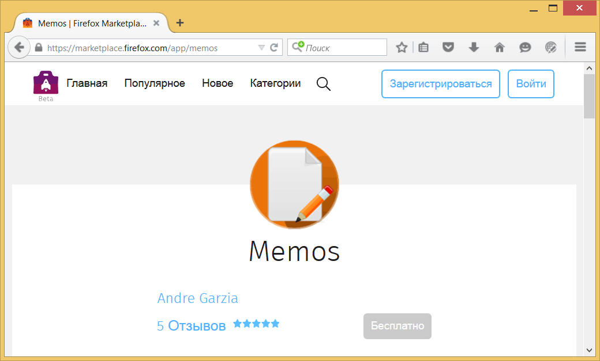
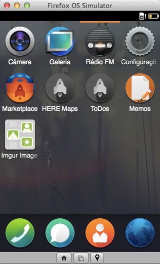
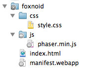

Настройки нашей игры

Этот Foxnoid выглядит гораздо лучше, чем эскиз в предыдущей главе
Приложения для Firefox OS являются коллекцией файлов HTML, CSS и JavaScript. В то время как большинство бизнес-приложений имеет дело со всеми тремя технологиями, разработка игр для мобильного веба, как правило, задействует больше JavaScript, чем HTML и CSS, потому что основана преимущественно на Canvas или WebGL по соображениям производительности. Для создания игры мы собираемся использовать мощный Canvas API для отображения двумерной графики и Touch Events API для управления. Мы будем использовать некоторые шаблоны HTML и CSS для инициализации, а затем всё волшебство перенесётся в JavaScript-ляндию.
В этой книге мы сосредоточены на задаче построения игры, но если вы хотите глубже погрузиться в разработку приложений для Firefox OS, то прочтите книгу Разработка для Firefox OS, особенно главу об основных понятиях.
Типы приложений
Firefox OS в настоящее время имеет два типа приложений: размещённые и упакованные.
- Размещённые приложения. Размещаются на веб-сервере подобно обычным веб-сайтам. Это означает, что когда пользователь запускает такое приложение, его содержимое загружается с удалённого сервера (или из кэша, если таковой имеется).
- Упакованные приложения. Распространяются в виде zip-файла и копируются на устройство при установке. Когда пользователь запускает такое приложение, его содержимое загружается из архива вместо удалённого сервера.
Плюсы и минусы есть у каждого типа. Игры, как правило, используют много статичных ресурсов, таких как изображения и звуковые файлы. Если вы используете размещённое приложение, то пользователь перед игрой должен скачать и кэшировать все эти файлы. Если взамен вы выберете упакованное приложение, то все статичные ресурсы идут в комплекте и копируются на устройство при установке приложения, так что после этого ничего не надо будет скачивать.
В этой книге мы будем строить упакованные приложения. Их проще делать, поскольку мы не имеем дело с кэшем и пользователю не надо ждать загрузки через Интернет после установки.
Манифест приложения
Манифест представляет собой файл в формате JSON, который описывает аспекты веб-приложения. Обычно этот файл называется manifest.webapp и располагается рядом с главным HTML-файлом, называемым, как правило, index.html.
Пример манифеста
{
"name": "Memos",
"version": "1.1",
"description": "A simple memo taking app",
"launch_path": "/index.html",
"permissions": {
"storage": {
"description": "Required for storing and retrieving notes."
}
},
"developer": {
"name": "Andre Garzia",
"url": "http://andregarzia.com"
},
"icons": {
"60": "/style/icons/icon_60.png",
"128": "/style/icons/icon_128.png"
}
}Выше мы видим манифест приложения под названием Memos. Среди прочего он описывает, кто создал приложение, какие иконки задействовать, как называется приложение, какой файл используется для запуска приложения (в данном случае это index.html), какой доступ к оборудованию требуется приложению и др. Этот файл использует Firefox OS для добавления приложения на главный экран устройства, а также Firefox Marketplace для отображения приложения в каталоге, как показано на рисунке ниже.

Приложение Memos в Firefox Marketplace
Обратите внимание, что информация из манифеста используется системой для добавления приложения на главный экран, как это видно на следующем скриншоте.

Memos в симуляторе
Собрав воедино свой HTML, CSS, JavaScript и файл манифеста вы получите приложение готовое работать на Firefox OS.
Здесь нет такого места как дом
Давайте дадим Foxnoid хороший дом на вашем компьютере. Как известно, мы собираемся построить коллекцию HTML, CSS, JavaScript и статичных файлов ресурсов. Все эти файлы будут храниться в папке на вашем компьютере. Ваша первая задача состоит в создании папки foxnoid на вашем компьютере, далее всё будет происходить внутри этой папки.
Ниже мы добавим некоторые шаблоны, просто чтобы загрузить наше приложение до точки, где мы можем сосредоточиться на JavaScript. Большинство фреймворков включают в себя скучный код, который необходимо использовать для всякой инициализации.
Ниже мы напишем этот код инициализации. Реализация самой игры написана в следующих главах.
Добавление фреймворка Phaser
Скачайте последнюю версию Phaser с phaser.min.js на GitHub и поместите её в папку js внутри папки foxnoid.
Этот файл содержит весь фреймворк Phaser в сжатой форме. Включите этот файл в HTML, чтобы использовать все возможности фреймворка в нашей игре.
CSS
Так как мы будем использовать Canvas для рисования игры, то нам не придётся полагаться на CSS. Тем не менее, мы должны сбросить некоторые значения, потому что разные браузеры принимают свои значения для полей и отступов. Мы хотим обнулить эти значения, чтобы полностью заполнить экран через Canvas.
Создайте папку css внутри папки foxnoid и поместите внутрь файл с именем style.css следующего содержания.
CSS сброс
html, body {
background: #000;
display: block;
margin: 0;
padding: 0;
}Это установит цвет фона по умолчанию и обнулит необходимые значения.
HTML
Как объяснялось выше, мы не собираемся писать много CSS и DOM. Эта игра представляет собой просто Canvas, так что наш HTML должен включать необходимые файлы JavaScript и один <div> для вывода данных.
Некоторые игры лучше написаны с DOM, но мы сделаем всё правильно на Canvas. Вы можете думать о Canvas как о телевизоре, в котором показывается картинка. Программирование с Canvas ближе к созданию игры для старой DOS и Game Boy, чем структурный гипертекст в HTML.
Мы собираемся менять этот HTML по мере продвижения по главам, но сейчас создайте файл с именем index.html следующего содержания.
Минимальный index.html
<!DOCTYPE html>
<html>
<head>
<meta charset="UTF-8" />
<title>Foxnoid Game</title>
<link rel="stylesheet" href="css/style.css" />
<script defer src="js/phaser.min.js"></script>
</head>
<body>
<div id="game"></div>
</body>
</html>Этот HTML ничего не делает, только предоставляет место для размещения холста и включает Phaser.
Использование defer в теге <script> улучшит производительность, поскольку JavaScript-файлы будут выполняться только после того, как DOM готов.
Манифест нашего приложениям
Создайте файл с именем manifest.webapp рядом с index.html в папке foxnoid следующего содержания.
Файл манифеста
{
"version": "0.1",
"name": "Foxnoid",
"description": "A game for Firefox OS",
"launch_path": "/index.html",
"developer": {
"name": "Andre Alves Garzia",
"url": "http://andregarzia.com"
},
"installs_allowed_from": ["*"]
}Это минимальные данные необходимые для начала процесса разработки игры. Помните, что перед отправкой приложения в Firefox Marketplace следует добавить в этот файл некоторые вещи вроде иконок. Мы ещё поговорим об иконах и статичных ресурсах в главе об ассетах.
Резюме
Ваша папка Foxnoid должна выглядеть следующим образом.

Папка Foxnoid
Если это не так, то вы всегда можете скачать исходники из хранилища Foxnoid на Github. Учтите, что версия на GitHub гораздо полнее, чем представленная здесь.
Прямо сейчас у вас должна быть папка с некоторыми файлами, которые служат в качестве отправной точки для разработки нашей игры. Вы также должны знать немного о типах приложений и манифесте.
В следующей главе мы добавим немного JavaScript для инициализации нашей игры.